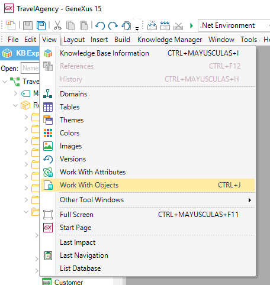

Module Object
A Module is a GeneXus object designed — as explained in Modules — to make it easier to understand, maintain and integrate a Knowledge Base. Modules do not change the Data Model; in other words, the Data Model is global to the Knowledge Base. Please read the articles HowTo: Creating a Module Object and HowTo: Opening a Module Object if this is your first time using this object. Properties
Viewing contentIn order of knowing a module's content, the WorkWithObject menu can be used to display a detailed list of all objects which are part of the module. First, open the WorkWithObject menu: 
And then, configure the following filters:
|